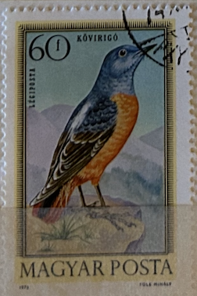
| SOURCE | TITLE| IMAGE MATCH | click to source page |
| eBay UK | Hungary/Magyar 1973 Birds 60 F. Stamp. | eBay UK | 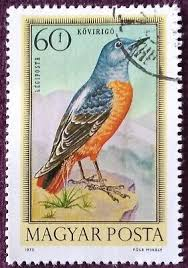 |
| Todocolección | se)1952-54 hungary, album pages with a variety - Buy Antique stamps of Hungary on todocoleccion | 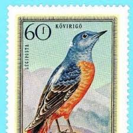 |
| allnumis.com | Stamps Catalog - List of stamps for 1959, Romania | 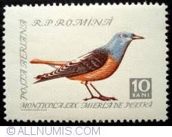 |
| Wikipedia | Common rock thrush - Wikipedia | 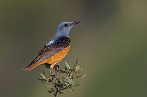 |
| Colnect | Stamp: Common Rock Trush (Monticola saxatilis) (Bosnia and Herzegovina, Serbian Admin.(European Nature Protection 2004) Mi:BA-SR 310,Sn:BA-SR 233,Yt:BA-SR 287,Sg:BA-SR S316,WAD:XH018.2004 📮 | 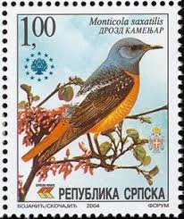 |
| Todocolección | sello usado hungría. yvert nº 2776. aniv. comis - Buy Antique stamps of Hungary on todocoleccion | 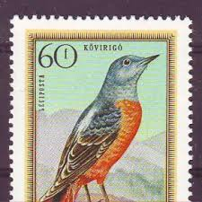 |
| Todocolección | sl) hungary bear used - Buy Antique stamps of Hungary on todocoleccion | 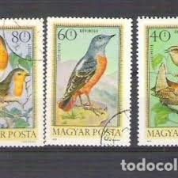 |
| GetArchive | Common Rock Trush (Monticola saxitilis) - PICRYL - Public Domain Media Search Engine Public Domain Image | 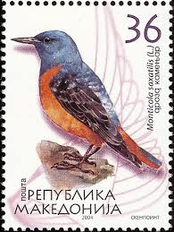 |
| Delcampe | Search in the "Airmail > Other & unclassified" category | Delcampe | 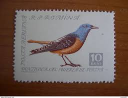 |
| Dreamstime.com | The Songbird editorial photo. Image of statue, infinite - 42756411 | 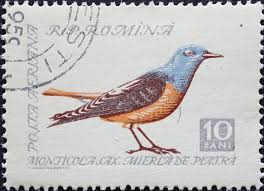 |
| Colnect | Romania : Stamps [Theme: Birds | Year: 1959] [1/2] : Colnect 📮 | 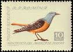 |
| eBay | Serbian Stamps | eBay | 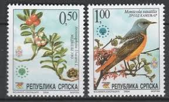 |
| eBay | Maxi Maximum Card Netherlands Limited Edition FDC BIRD 2011 ..45 | eBay | 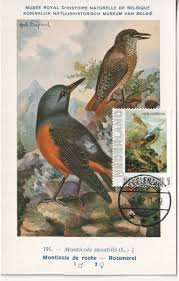 |
| Anne søbjørn (annesbjrn) - Profile | Pinterest | 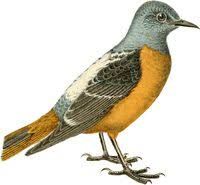 | |
| Wiktionary | common rock thrush - Wiktionary, the free dictionary | 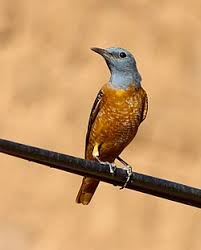 |
| allnumis.com | 45 Qindarka 1971 - Monticola Saxatilis, 1971 - Albania - Stamp - 52793 | 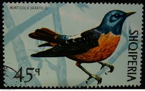 |
| Wikimedia.org | File:Rufous-tailed Rock-thrush (Monticola saxitilis) (49791927182).jpg - Wikimedia Commons | 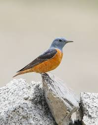 |
| iNaturalist | Common Rock-Thrush (Monticola saxatilis) · iNaturalist | 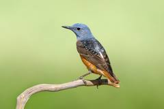 |
| Wikimedia.org | File:Stamp of Albania - 1971 - Colnect 301816 - Common Rock Thrush Monticola saxatilis.jpeg - Wikimedia Commons | 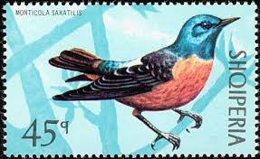 |
| Tripadvisor | Rufous-tailed Rock Thrush Monticola saxatilis (Linnaeus, 1766) Пестрый каменный дрозд - Picture of Birds Kazakhstan Birdwatching Community, Almaty - Tripadvisor | 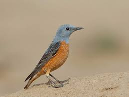 |
| Etsy | Impression de grive des rochers, 1955, lithographie ornithologique antique - Etsy France | 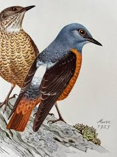 |
| iNaturalist | Common Rock-Thrush (Monticola saxatilis) · iNaturalist | 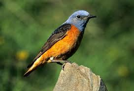 |
| Animalia - Online Animals Encyclopedia | Common rock thrush - Facts, Diet, Habitat & Pictures on Animalia.bio | 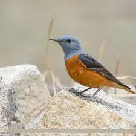 |
| Dreamstime.com | Oriole House of Sha Kok Estate Shatin New Territories Hong Kong on Nov 18 2022 Editorial Stock Image - Image of rent, estate: 261686189 | 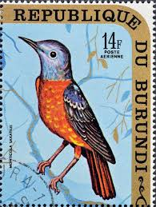 |
| IMAGO | Steinroetel, Stein-Roetel, Weibchen mountain rock thrush, female | 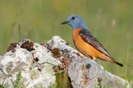 |
| Birda | Common Rock Thrush (Monticola saxatilis) identification - Birda | 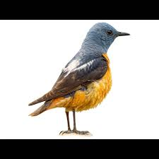 |
| Oiseaux.net | Common Rock Thrush - Monticola saxatilis | 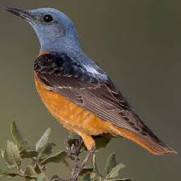 |
| iNaturalist | Photos of Common Rock-Thrush (Monticola saxatilis) · iNaturalist | 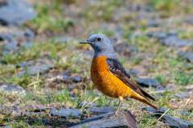 |
| Flickr | Thrushs | Flickr | 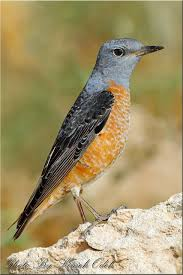 |
| Common Rock Thrush (Monticola saxatilis) | 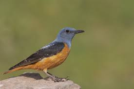 | |
| Wikimedia.org | File:Monticola saxatilis NAUMANN.jpg - Wikimedia Commons | 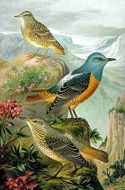 |
| Bumper Box of Delights Bookshop | 1944 The Birds of the British Isles and Their Eggs 3 Vols by TA Coward – Bumper Box of Delights Bookshop | 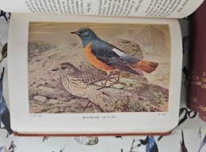 |
| 10,000 Birds | Species Turnover - 10,000 Birds | 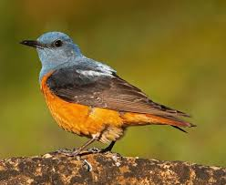 |
| BirdGuides | Common Rock Thrush by Natalino Fenech - BirdGuides | 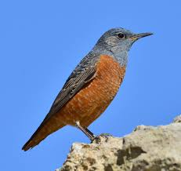 |
| Wikimedia.org | File:Rufous-tailed Rock-thrush (Monticola saxatilis) (48677975812).jpg - Wikimedia Commons | 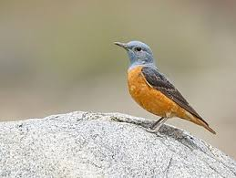 |
| Greek Nature Encyclopedia | Common Rock Thrush | Greek Nature Encyclopedia | 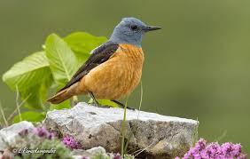 |
| visual-nature | Archive Ralph Martin | 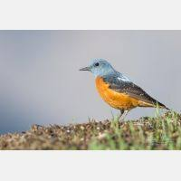 |
| Simon Speich | Steinrötel | Photo database | 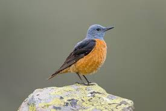 |
| PBase.com | Dave Barnes's Photo Galleries at pbase.com | 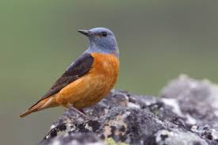 |
| Blue rock thrush (Female) - Shot with Canon SX50HS @ 122nd bird walk of Hyderabad Birding Pals. | Scientific Name : Monticola solitarius | |Location : HCU campus, Telangana state, India | | | 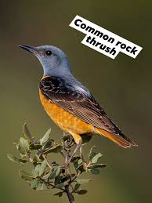 | |
| bedandbirding.com | Complex Perpera - Bulgaria | Homes made for birders. | 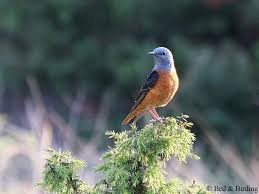 |
| acopiancenter.am | Rufous-tailed Rock-thrush - A Field Guide to Birds of Armenia ::Acopian Center for the Environment | 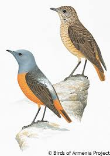 |
| Kuwait Birds | Migrant | KuwaitBirds.org | 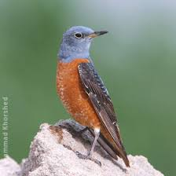 |
| Wikimedia.org | File:Rufous-tailed Rock-thrush (Monticola saxatilis) (48324462311).jpg - Wikimedia Commons | 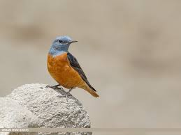 |
| Birdbook | Common rock thrush — Almaty, 28.04.2025 | 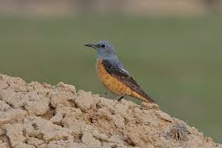 |
| wildscenes.com | Bird photography in Spain | photographing birds in Spain | Yorkshire nature photographer | wildlife photography | Bird photography » wildscenes.com | 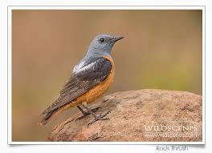 |
| Eyal Bartov | Tahrush- צוקיות - eyalbartov | 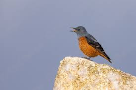 |
| Rufous Tailed -Rock Trush Bird Pictures captured from Jhimpir, Sindh October 2025 Uncommon passage migrant. A colourful mountain bird,It is found on rocky mountain slopes and wadis as well as open areas | 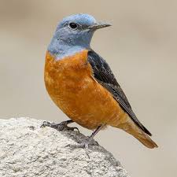 | |
| Wikimedia.org | File:Rufous-tailed Rock-thrush (Monticola saxatilis) (48920637857).jpg - Wikimedia Commons | 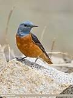 |
| Rufous tailed rock thrush Ayia Napa hilltop | ||
| Macaulay Library | Rufous-tailed Rock-Thrush - Monticola saxatilis - Media Search - Macaulay Library and eBird | |
| Rufous-tailed Rock-Thrush (Monticola saxatilis). 11-6-2025. Arcos de las Salinas. Teruel. Spain. | ||
| topoguide | Index of /mountains/attiki/advs_imittos/img/birds | |
| Flickr | Desmond Lobo | Flickr | |
| iNaturalist | Rock-Thrushes (Genus Monticola) · iNaturalist | |
| Media Storehouse | Agami Print of Male Common Rock Thrush in Italy. Art Prints, Posters & Puzzles from Agami | |
| Etsy | Rock Thrush Vintage Bird Print From 1952 Songbird Antique Lithograph Wild Bird Original Illustration With Mount - Etsy | |
| 1001 Nights Tours | بایگانیهای Bird Watching Tours - 1001 Nights Tours | |
| Getty Images | Closeup Of Bluethroat Perching On Rock Missouri United States Usa High-Res Stock Photo - Getty Images |
_(49791927182).jpg){kind=link}
{kind=link}
{kind=link}
_(48677975812).jpg){kind=link}
_(48324462311).jpg){kind=link}
_(48920637857).jpg){kind=link}